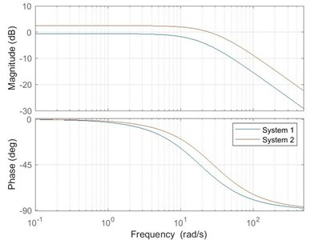
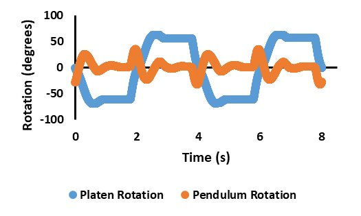

The objective of this lab was to experimentally obtain the transfer function for two custom-built motor/flywheel systems utilizing two experimental methods and comparing the results to theoretically obtained bode plots. Method one, the frequency domain approach, involved feeding in a series of sine waves of the same amplitude but varying frequencies, recording the system's response to create a bode plot and find the transfer function. Method two, the time domain approach, involved feeding an impulse or step response into the system to create a second transfer function. The frequency domain approach resulted in more accurate results for both systems, likely due to testing at one frequency at a time giving a clearer response compared to the inherently noisier square wave. Future reproductions would benefit from off-the-shelf thrust bearings to reduce friction and higher accuracy gears to increase system response.

This lab investigated the performance of several feedback control strategies — bang-bang, proportional, PID, and full-state-space — applied to a motor/flywheel system. Each method was evaluated using 0.25 Hz square and sine wave inputs to compare tracking accuracy, response speed, and control effort. The bang-bang controller produced the fastest response with rise times as low as 0.10 seconds but exhibited the largest RMS errors up to 130° and overshoots of 25% due to its on-off switching nature. The proportional controller reduced RMS error to 25° at Kp = 5.0, though with slower rise times around 0.74 seconds. The tuned PID controller (Kp = 8, Ki = 35, Kd = 0.35) and full-state-space controller (Kp = 18.7165, Ki = 0, Kd = 0.5679) provided the most balanced performance, achieving quick settling with minimal steady-state error and smoother control signals.
The objective of this experiment was to implement and evaluate a full-state feedback controller on a downwards pendulum using both manual tuning and Linear Quadratic Regulator (LQR) methods. An LQR controller was created in MATLAB using the system's state-space model with iteratively refined Q and R matrices. Five test cases were performed comparing manual tuning, baseline LQR control, Q-matrix adjustments, and large decreases or increases in the R value. The optimized LQR controller with adjusted Q values produced the best result, reducing pendulum RMS error from 21.65° to 12.96°, decreasing command effort by 20.9%, and lowering overshoot by 80.7%. Extreme modifications to the R value led to highly unstable or overly sluggish responses, demonstrating the sensitivity of LQR control to state and input weighting and the importance of appropriately tuned parameters for improved system behavior.
